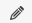
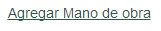
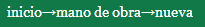

Operaciones sobre mano de obra
Editar mano de obra
Para realizar la edición, haga click en el icono del lápiz  al lado de la mano de obra que desea editar.
al lado de la mano de obra que desea editar.
Será conducido a una nueva pantalla donde se cargan automáticamente los datos de la mano de obra seleccionada.
En esta pantalla usted puede ingresar una nueva descripción, seleccionar una nueva unidad de medida de las que estén disponibles en la lista, y/o ingresar un nuevo precio.
Al finalizar la edición, con el botón  podrá hacer efectivos los cambios.
En el caso que desee cancelar la edición, puede acceder a la página anterior haciendo click sobre “mano de obra” en la barra de navegación de la esquina superior izquierda
Borrar mano de obra
Para realizar el borrado, haga click en el icono del cesto  al lado de la mano de obra que desea borrar.
al lado de la mano de obra que desea borrar.
Se le mostrará una confirmación antes de realizar el borrado.
En caso que ya no quiera realizar el borrado, el botón cancelar lo llevara nuevamente a la lista de mano de obra sin haber borrado la mano de obra seleccionada.
En caso de aceptar, se borrará la mano de obra de la lista, y será redirigido a la página actualizada de la lista de mano de obra.
Agregar mano de obra
Para agregar una nueva mano de obra, haga click en el vínculo en la mitad superior de la pantalla “Agregar mano de obra”
Será conducido a una nueva pantalla donde se encuentran los campos disponibles para cargar los datos de la nueva mano de obra.
Descripción: ingrese la descripción de la mano de obra.
Unidad de medida: seleccione de la lista la unidad de medida deseada.
Precio: el precio de la mano de obra por unidad de medida.
Al finalizar la carga, con el botón  podrá hacer efectivos los cambios.
podrá hacer efectivos los cambios.
En el caso que desee cancelar el alta, puede acceder a la página anterior haciendo click sobre “mano de obra” en la barra de navegación de la esquina superior izquierda 